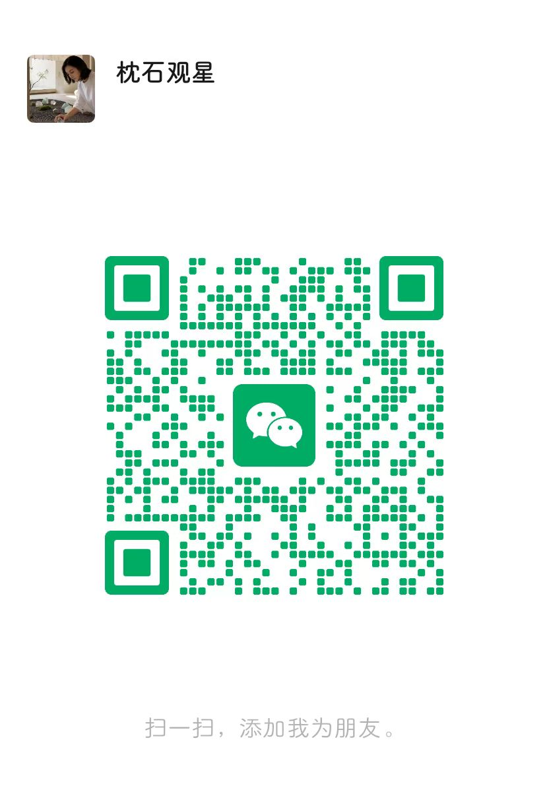

寻星愈心
五行水晶 · 专属测算
📅 出生信息
性别
女
男
出生年份
出生月份
出生日期
出生时辰（可选）
不确定
子时 23:00-01:00
丑时 01:00-03:00
寅时 03:00-05:00
卯时 05:00-07:00
辰时 07:00-09:00
巳时 09:00-11:00
午时 11:00-13:00
未时 13:00-15:00
申时 15:00-17:00
酉时 17:00-19:00
戌时 19:00-21:00
亥时 21:00-23:00
出生省份
请选择
出生城市
请先选择省份
开 始 测 算
生辰八字由天干地支组成，五行均衡为佳
水晶能量辅助调和，仅供参考
✨ 解锁专属测算
关注「寻星愈心」，即可获取
五行八字 · 水晶能量
专属报告
💚 微信关注
❤️ 小红书

微信扫码 → 添加好友 / 关注公众号
备注「五行」即可优先获得回复 💌
❤️
关注这2个账号，解锁测算
@枕石观星
ID: 27428764468
@晶石解压师-石不语
ID: 8835826074
🔍
小红书搜索以上账号并关注
📌
点赞 + 收藏这条笔记
💬
评论区留下你的五行命格
关注后回到这里，点击下方开始测算 🔐
✅ 已关注，开始测算
稍后再说，直接测算